Yggdrasil is a personal project ecosystem organized under the Norse Nine Realms metaphor. At its heart lies Lilith v4.0 — a dark-fantasy CLI agent with hybrid memory, swarm intelligence, MCP protocol, multi-provider LLM, skills framework, and real-time dashboard.
$ git clone https://github.com/BrierAinz/Yggdrasil.git
$ cd Yggdrasil
$ cp Asgard/Lilith/.env.example Asgard/Lilith/.env
$ cd Asgard/Lilith && lilithYggdrasil is not a monorepo — it is a living ecosystem where every project has a purpose, a lifecycle, and a destination realm. Inspired by Norse cosmology, each realm serves a distinct function in the development lifecycle.
Idea → Muspelheim → [Target Realm] → Helheim (if it dies).
Each realm has a single, well-defined purpose. Projects migrate between realms as they evolve, following strict rules defined in REGLAS_YGGDRASIL.md.
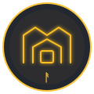
Asgard Core Technology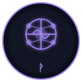
Vanaheim AI Agents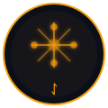
Alfheim UI Prototypes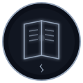
Svartalfheim Knowledge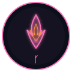
Muspelheim Active Dev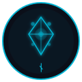
Niflheim Resources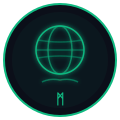
Midgard Personal Apps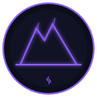
Jotunheim Massive Projects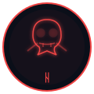
Helheim GraveyardThe crown jewel of Asgard. A local-first AI assistant that runs entirely on your hardware via LM Studio, with no cloud lock-in. Control it from anywhere through Telegram.
~/.lilith/config.toml. Circuit breaker, graceful shutdown, error tracking, and automatic recovery.
Each agent embodies a Norse archetype — a specialized consciousness serving the ecosystem.
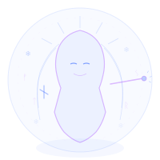
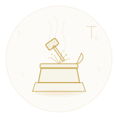
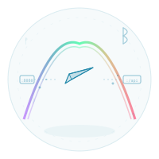
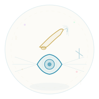
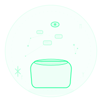
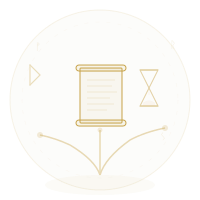
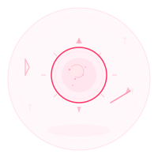
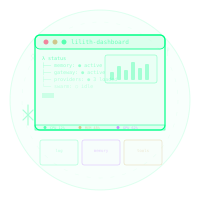
Current state of the major components across all realms.
| Component | Realm | Status | Description |
|---|---|---|---|
Lilith |
Asgard | Active | Core orchestrator v4.0 — CLI, memory, swarm, MCP, skills, dashboard |
Gateway |
Asgard | Active | FastAPI REST bridge exposing Telegram, Scheduler, Agents, Plugins |
LLM Providers |
Asgard | Active | Multi-provider: LM Studio (local), Kimi (remote), OpenAI-compatible, auto-fallback |
Hybrid Memory |
Asgard | Active | Vector embeddings + knowledge graph + FTS5, auto-compression, entity extraction, session search |
Swarm Intelligence |
Asgard | Active | LLM-powered specialist agents with file locking, conflict resolution, persistent SQLite sessions |
Skills & MCP |
Asgard | Active | Hot-reloadable skill packs, MCP protocol, dynamic tool registration, 35+ native tools |
Task Scheduler |
Asgard | Active | Cron-like scheduling with REST API and persistent storage |
Dashboard |
Asgard | Active | Real-time web dashboard with WebSocket, multi-pane layout, terminal widget |
TOML Config & Resilience |
Asgard | Active | Unified config, circuit breaker, graceful shutdown, error tracking, auto-recovery |
Telegram Bot |
Vanaheim | Active | Remote control interface for the entire ecosystem |
VSCode Extension |
Alfheim | Prototype | Visual interface for Lilith inside VS Code |
Website |
Svartalfheim | Active | GitHub Pages documentation site (this page) |